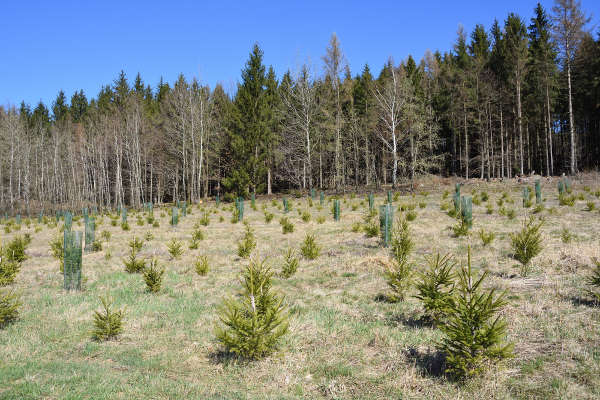
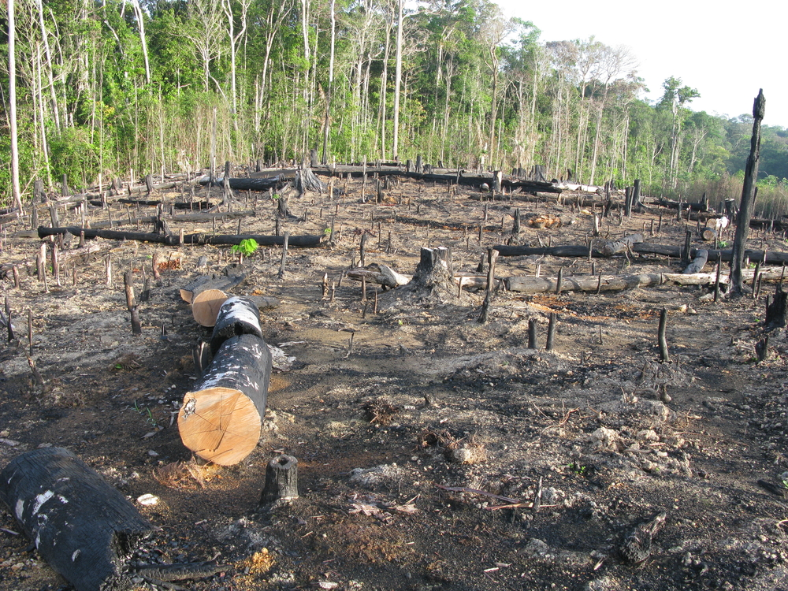
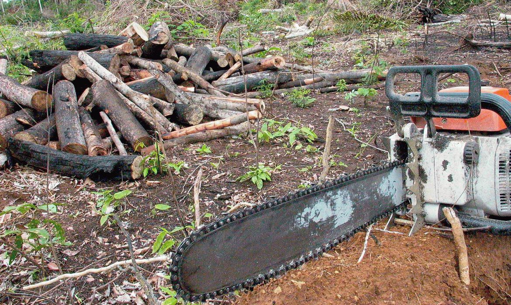

Desmatamento, também chamado de desflorestamento, consiste na retirada da cobertura vegetal parcial ou total de um determinado lugar. Enquanto alguns enxergam essa prática como uma ação necessária ao suprimento das necessidades do ser humano, outros apontam o desmatamento como um dos maiores problemas ambientais da atualidade. A retirada da cobertura vegetal está relacionada a diversas causas, como a urbanização, mineração e expansão do agronegócio, e seus impactos são inúmeros.
Os países industrializados apresentaram, durante esse período, maiores taxas de desmatamento. Com o passar dos anos, essas taxas começaram a cair nesses países e a aumentar nos países em desenvolvimento e subdesenvolvidos.
O desmatamento pode ser atribuído a diversas atividades, sendo essas, em sua maioria, antrópicas. A retirada da cobertura vegetal está relacionada, por exemplo, com a expansão do agronegócio; com o extrativismo animal, vegetal ou mineral; com a necessidade de explorar matéria-prima para atividades de todos os setores da economia; com a urbanização referente ao aumento das cidades; e também com atividades ilegais que envolvem queimadas propositais e até mesmo exploração de áreas de conservação para fins pessoais, como especulação fundiária.

As principais consequências do desmatamento estão relacionadas ao meio ambiente e a tudo que lhe diz respeito. Ao desmatar, compromete-se toda a biodiversidade da área. Espécies da fauna perdem seu habitat e espécies da flora podem entrar para a lista de ameaças à extinção e assim causar um enorme desequilíbrio ambiental, prejudicando até mesmo as atividades primárias, das quais dependem muitas famílias, e também a economia, como a caça, a agricultura e a pecuária.
A retirada da cobertura vegetal também agrava a questão das mudanças climáticas. Além do aumento das emissões de gases poluentes à atmosfera que tem agravado o efeito estufa e o aquecimento global, o desmatamento também é considerado um dos fatores responsáveis pelas alterações no clima. Os anos estão cada vez mais quentes, e o aumento da temperatura da Terra tem causado inúmeros danos aos ecossistemas e também à saúde humana.
Outra questão diretamente ligada ao desmatamento está relacionada às alterações provocadas no solo, bem como nos recursos hídricos. Retirar a vegetação de uma determinada área favorece o processo de erosão do solo, pois é a cobertura vegetal que auxilia na infiltração da água da chuva. Portanto, sem ela, a água escorre sobre o solo, provocando deslizamentos e a erosão. A retirada da vegetação próxima a áreas de cursos d'água também provoca deslizamentos de terra, que se deposita nos rios, provocando então o assoreamento

A lista dos países que mais desmataram é liderada pelo Brasil e seguida por países como a República Democrática do Congo, Indonésia, Colômbia, Bolívia e Malásia. Brasil e Indonésia, juntos, desmataram aproximadamente 46% das florestas tropicais no mundo em 2018. Acredita-se que esse aumento do desmatamento tem prejudicado os esforços para conter o aquecimento global.
Paralelamente, alguns países têm diminuído suas taxas de desmatamento. Entre 2010 e 2015, a diminuição do desmatamento mundial foi para cerca de 33 mil quilômetros quadrados líquidos, segundo a FAO. Esse é o resultado obtido entre a devastação das áreas e o reflorestamento. Anualmente são perdidos cerca 76 mil quilômetros quadrados, compensados por 43 mil quilômetros quadrados de reflorestamento.
O desmatamento da Amazônia tem provocado um grande pesar no mundo todo. A região de maior biodiversidade do planeta tem sofrido com o aumento do desmatamento e preocupado representantes de diversos países, assim como inúmeras organizações ambientais, considerando que a Amazônia é responsável pelo equilíbrio ambiental não só do Brasil mas do mundo todo.
O Cerrado, assim como a Amazônia, tem sofrido com a intensificação do desmatamento. De acordo com dados divulgados pelo Inpe em 2018, o bioma perdeu cerca de 6.657 km², 11% a menos que em 2016 e 33% a menos que o registrado em 2010.
O Cerrado é o segundo maior bioma do Brasil, atrás apenas da área ocupada pela Amazônia. Apesar da redução da taxa de desmatamento nos últimos anos, é preciso ressaltar que a perca da vegetação do bioma já chega a 51%. Esse desmatamento é associado ao avanço do agronegócio. Segundo o Instituto de Pesquisa Ambiental da Amazônia (Ipam), em 15 anos, o desmatamento do Cerrado foi superior ao praticado na Amazônia.

Conter o desmatamento parece óbvio: basta não desmatar. No entanto, essa não é uma questão tão simples. Sabemos que muitos países colocam, à frente dos seus patrimônios ambientais, questões econômicas. É importante ressaltar que, sim, o agronegócio é fundamental para o desenvolvimento de uma economia, bem como para o suprimento alimentar do mundo. Entretanto há de buscar-se uma maneira sustentável de desenvolvimento, e esse é atualmente um dos maiores desafios da humanidade.
Estamos provocando um colapso ambiental por meio das atividades humanas, e o desmatamento é uma das questões que, como dito, possuem inúmeras consequências. Como afirmado pela FAO, não há necessidade de expandir as áreas voltadas à produção agrícola, mas sim a de intensificar a produção, de modo que as leis ambientais sejam asseguradas.
Mas porque estamos falando isso tudo para você caro leitor?
Queremos mostrar um pouco do que está acontecendo em nossa volta, e mostrar a vocês que o desmatamento atingi a nós sim, e que pode acabar nos prejudicando e também o futuro de nossos filhos.
A nossa empresa quer ajudar a mudar esse final trágico, e ter um lugar mais limpo, bonito e ótimo de se morar. E para isso precisamos da sua colaboração, fazendo não só denúncias mas nos indicando lugares onde precisa de um cuidado maior, e nos informando sobre o que mais podemos fazer para auxiliar a cidade de São Paulo.